这里是第一段测试
这里是第二段测试
JavaScript 能够直接写入 HTML 输出流中：
您只能在 HTML 输出流中使用 document.write。 如果您在文档已加载后使用它（比如在函数中），会覆盖整个文档。
JavaScript变量匈牙利命名法
类型指变量的类型
对象描述指对象名字全称或名字的一部分，要求有明确含义，命名要容易记忆容易理解。
JavaScript变量起名类型 变量命名前缀
Array 数组==a
Boolean 布尔==b
Float 浮点==l
Function 函数==f
Integer(int) 整型==n
Object 对象=o
Regular Expression 正则==r
String 字符串==s
aeb
a，b为一个数字。aeb等价与a乘以10的b次方。
示例
2e3为指数表示法等价于
2e3===2*10*10*10
var str='字符串'; //方法一
var str=new string('字符串'); //方法二
通常使用方法一，比较简单。应该使用单引号'或者双引号'将字符串囊括其中。
应该使用\(反斜杠)在JavaScript字符串中表示转义字符(转义字符就是在字符串中无法直接表示的)。
字符 转义字符表示法
'==\'
'==\'
\==\\
/==\/
b==\b
f==\f
n==\n
r==\r
t==\t
u==\u
\u后面加4个十六进制数字可以表示一个字符，例如
var sStr='\u0064\u0072\u0065\u0061\u006D\u0064\u002E\u0063\u006F\u006D';
alert(sStr);
可以打印出dreamdu.com
转义字符与\u可以参考，ASCII编码表。
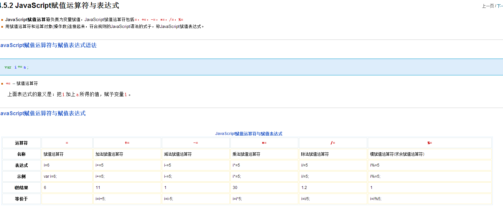
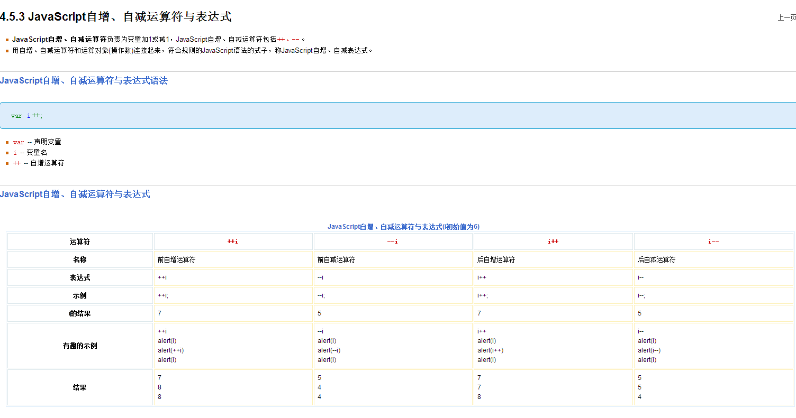
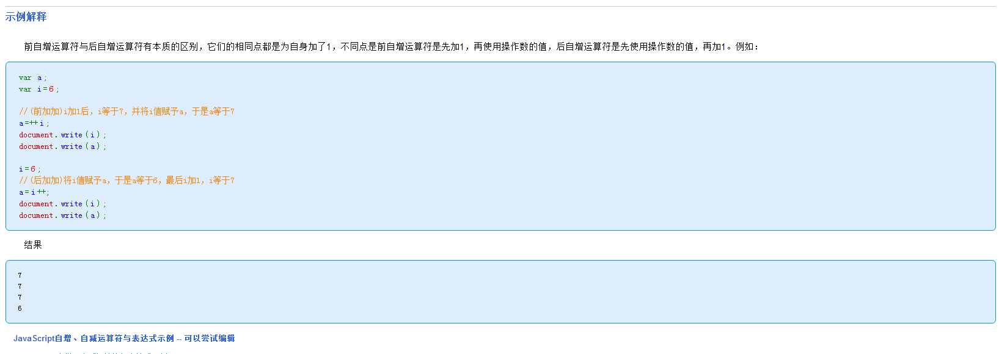
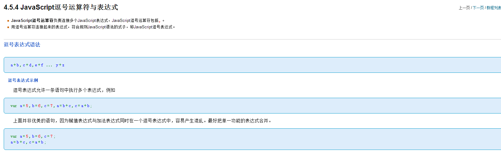
JavaScript 能改变 HTML 元素的内容。
Click on the header to alert its value
x=document.getElementById('id') 只是获取某元素ID为id的对象。 x=document.getElementById('id').value 只是获取某元素ID为id的对象的value值，一般只是获取input对象的value值。 而x=document.getElementById('id')则可以是所有的html元素 如： 分别执行下面的代码 x=document.getElementById('id') alert(x); 这里弹出的信息会是[HTML Obect】 x=document.getElementById('id').value alert(x) 这则直接弹出测试 超出的字符文字等显示为省略号 .name{ line-height: 30px; text-align: center; text-overflow:ellipsis;//让超出的用...实现 white-space:nowrap;//禁止换行 overflow:hidden;//超出的隐藏 display: block; } 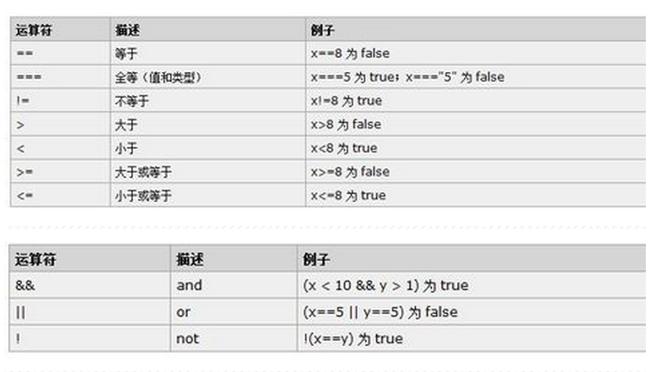 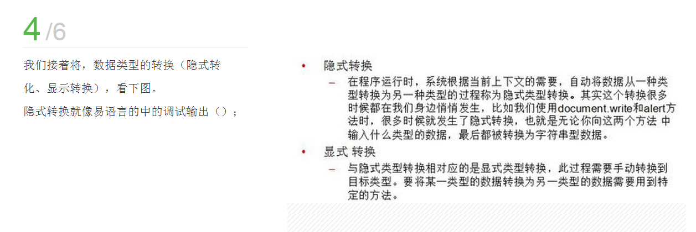点击下面的按钮，将代码块循环五次：
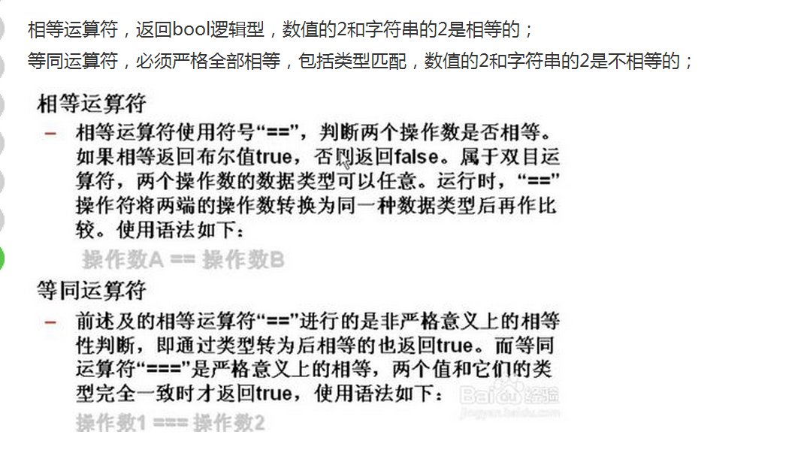 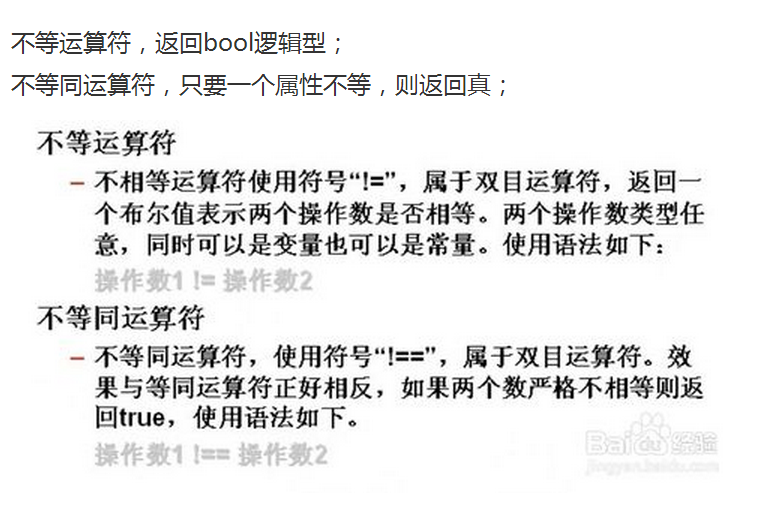 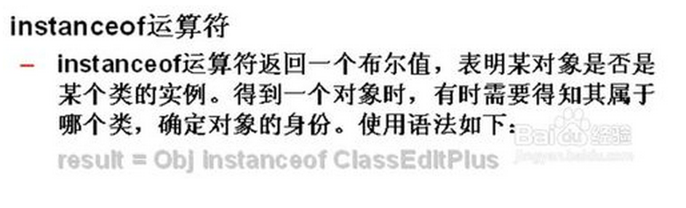 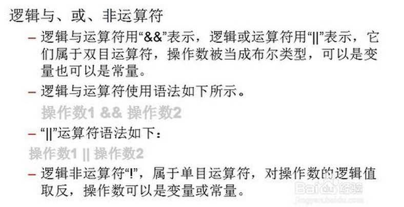 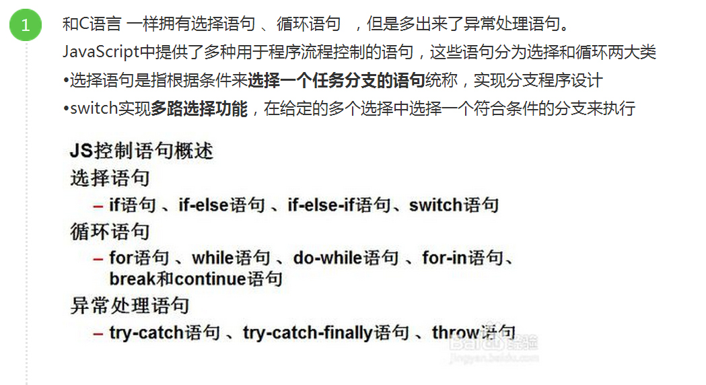 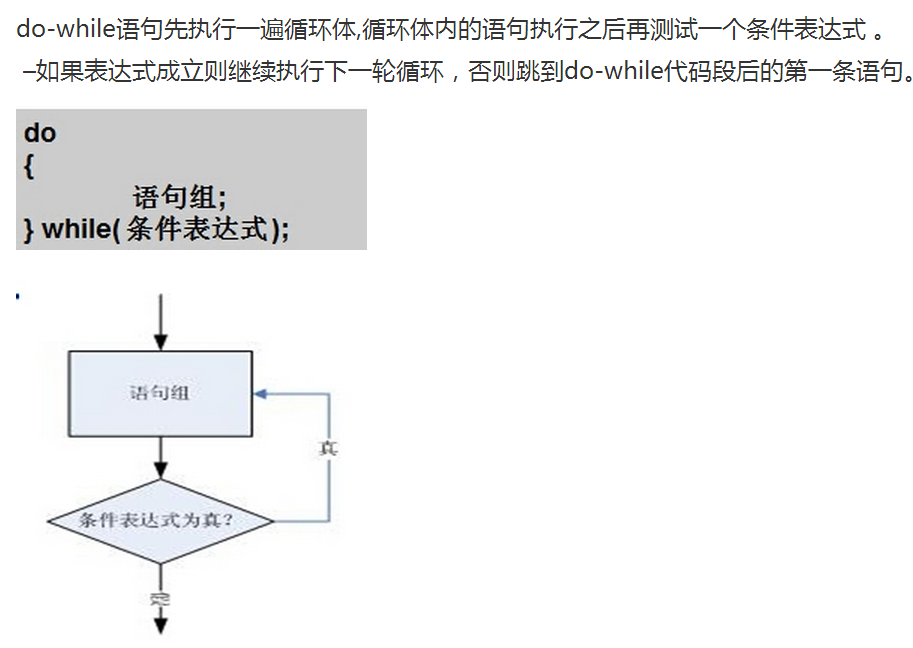点击下面的按钮来执行循环，该循环会跳过 i=3 的步进。

JavaScript 能改变 HTML 元素的样式。
请输入数字。如果输入值不是数字，浏览器会弹出提示框。
这里是变化
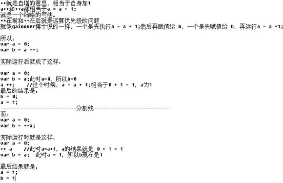这里是效果
看效果
只要i小于5就会一直执行下面的代码
请输入5-10的数字
这里是测试12
这里是第一段测试
这里是第二段测试
当您离开输入字段时，会触发将输入字母变为大写的函数
这是一段文本。
这是一个段落。
这是另一个段落。
这是一个段落。
这是另一个段落。
建议：
First Name:
First Name:
Last Name:
函数可作为一个值：
x = myFunction(4,3) 或 x = 12
两种情况下，x 的值都为 12。
函数可作为一个表达式使用。
arguments.length 属性返回函数接收到参数的个数：
在函数体内，标识符arguments是指向实参对象的引用，实参对象是一个类数组对象 arguments[0]，arguments.length arguments是什么? 答:1:arguments是收到的实参副本 在词法分析中, 首先按形参形成AO的属性,值为undefined 当实参传来时, 再修改AO的相应属性. 2:并把所有收到实参收集起来,放到一个arguments对象里 t(a,b,c){}, 调用时: t(1,2,3,4,5) 5个参数 此时 , AO属性只有a,bc,3个属性, arguments里有1,2,3,4,5, 所有的值 对于超出形参个数之外的实参, 可以通过arguments来获得 3:arguments 的索引 从 0, 1,2,....递增,与实参逐个对应 4:arguments.length 属性代表实参的个数 5:arguments一定不是数组, 是长的比较像数组的一个对象,虽然也有length属性 6:arguments每个函数都会有,因此,arguemnts只会在内部找自身的arguments, 无法引用到外层的argumentstoString() 将函数作为一个字符串返回：
设置参数参数的默认值。
设置函数参数默认值。
查找最大的数。
计算所有参数之和：
:active选择器：当所指定的元素处于激活状态（鼠标在元素上按下还没有松开）时所使用的样式； :focus选择器：当元素获得光标焦点时使用的样式，主要用在文本框输入文字时使用； 【注】下方案例运行效果，之所以点击后立即变为绿色是因为active触发的同时focus也触发了，所以active定义的样式看似无效，大家可以先把focus定义的样式注释掉运行；在这演示首行缩进，在这演示首行缩进，在这演示首行缩进，在这演示首行缩进，在这演示首行缩进，在这演示首行缩进，在这演示首行缩进，在这演示首行缩进，在这演示首行缩进，在这演示首行缩进，在这演示首行缩进，在这演示首行缩进，在这演示首行缩进，在这演示首行缩进，在这演示首行缩进，